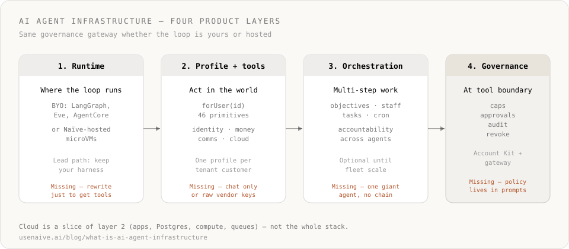

- ›
AI agent infrastructure is the product layer for agents that take real-world actions— not a chatbot wrapper and not generic cloud alone. - ›On Naïve the unit is a governed agent profile per tenant: identity, money, comms, and optional runtime, with policy enforced at every tool call.
- ›The stack has four layers: runtime choice, primitives, orchestration, and governance (caps, approvals, audit, revoke).
- ›You can bring your own agent loop (LangGraph, Eve, AgentCore); governance still applies at the tool-call boundary.
- ›
Cloud (apps, Postgres, compute, queues) is an opinionated slice agents can provision— not the whole product story. - ›Start with a workspace key, a tenant user (not the default), a tight Account Kit, and one high-risk call through naive.forUser(id).
Most teams discover they need AI agent infrastructure the hard way: the demo chat loop works, then the first production agent needs a browser login, a card with a hard cap, a real inbox, and a way to kill access at 2 a.m. Generic cloud was built for request-response apps. Model APIs were built for tokens. Neither was designed for agents that act for hours, across vendors, under policy — especially when each of your customers needs their own isolated agent.
Naïve ships that layer as a product: a governed agent profile per tenant, 46 primitives for real-world action, and a governance gateway that enforces caps, approvals, audit, and revoke at the tool-call boundary. You can bring your own runtime; cloud is an optional slice, not the headline.
Who this is for
Multi-tenant SaaS and agent products whose end-customers already live in real tools — Gmail, Stripe, HR systems, browsers, cards — and whose agents must act as that customer, not through one shared admin token. If you only need a chat UI or a model router, you do not need this category yet.
What is AI agent infrastructure?
AI agent infrastructure is the product stack that lets agents run in production: tools that reach the outside world, optional cloud the agent can provision, orchestration across steps, and governance that bounds what they may do.
It is not:
- A single LLM endpoint or model gateway
- A prompt library or agent “personality”
- A generic Kubernetes cluster with no agent semantics
- Isolation alone with no identity, money, or revoke story
- A promise that Naïve replaces Stripe, Gusto, AWS, or your customers’ systems of record — vendors stay SoR; Naïve governs access and action
On Naïve the durable unit is the governed agent profile: identity + money + comms (+ optional runtime) per tenant, addressed with naive.forUser(id).
Platform vs framework vs model API
| Layer | Job | Alone, you still lack… |
|---|---|---|
| Model API | Completions | Action, identity, revoke |
| Framework | The agent loop | Cards, email, browser, cloud, policy |
| Agent infrastructure (platform) | Capabilities + governance | — (this is the production layer) |
Naïve is built as the third row. A canvas plus a model dropdown is a builder — not agent infrastructure in this sense.
The four product layers

| Layer | Job | Failure mode if missing |
|---|---|---|
| Runtime | Where the agent loop runs (yours or hosted) | You rewrite the harness just to get tools |
| Agent profile + primitives | Act in the world under one per-tenant identity | Agents can only chat; or hold raw vendor keys in the prompt |
| Orchestration | Objectives, staff, tasks, cron | One giant agent; no accountability chain |
| Governance | Caps, approvals, audit, revoke at the tool boundary | Policy lives in prompts; revoke is a weekend project |
Naïve ships profile + primitives + governance as product surfaces, stays runtime-agnostic, and offers cloud primitives when the agent must provision apps or workers. See why consolidate on one governed identity.
The unit of the product: primitives
A primitive is one real-world capability as one API surface. Forty-six published primitives group into nine batches:
Batch (?category=) | Examples |
|---|---|
Identity (identity) | KYC, LLC formation, domains, email, phone |
Money (money) | Virtual cards, wallet, trading, billing |
Automation (automation) | Browser, mobile, connections |
Content (content) | Image, video, clips, audio, social |
Intelligence (intelligence) | LLM router, search, memory, knowledge |
Market data (market-data) | SEO, AEO, app data, commerce |
Cloud (cloud) | Apps, database, storage, functions, auth, compute, queue |
Orchestration (orchestration) | CEO, staff, objectives, tasks, cron |
Trust (trust) | Approvals, vault, sessions, logs, webhooks |
Browse them live: usenaive.ai/developers/primitives.
Controlled autonomy (not prompt policy)
Policy is an Account Kit — which primitives are enabled, which third-party apps may connect, which tools within an app are allowed, and which actions need a human. Enforcement is at execution time, not in the system prompt.
Defaults that matter for first calls (from platform policy): examples include cards.create, connections.connect, formation.create, compute.create, and compute.exec. Those are human-gated unless a kit opts out — and the full default set is longer (domains, verification, phone, mobile, trading, and more). Agent callers on a real (non-default) tenant user get HTTP 202 with pending_approval; the action runs only after a human approves. Dashboard/session humans bypass the gate, and so do agent calls on the workspace’s default tenant user — see approvals.
Cloud is a slice, not the company
When people say AI-native cloud, they usually mean apps, data, and compute an agent can provision by API. Naïve ships that as an opinionated, managed set of cloud primitives — not a general hyperscaler replacement and not the whole product. Details and honest limits: What is an AI-native cloud?. Solution page: Cloud Infrastructure for AI Agents.
A minimal path you can run today
You need a workspace key (nv_sk_...) from the dashboard → Settings → API keys. The SDK is server-only.
import { Naive, isPendingApproval } from "@usenaive-sdk/server";
const naive = new Naive({ apiKey: process.env.NAIVE_API_KEY! });
// 1) Policy template for this tier
const kit = await naive.accountKits.create({
name: "Starter — vault + gated cards",
primitives_config: {
vault: { enabled: true },
cards: { enabled: true },
},
});
// 2) One tenant user per customer (not the workspace default user)
const customer = await naive.users.create({
email: "customer@acme.com",
external_id: "acme_customer_1",
account_kit_id: kit.id,
});
// 3) Every data-plane call is scoped
const agent = naive.forUser(customer.id);
// 4) High-risk money move — parks for approval on agent callers
const res = await agent.cards.create({
name: "Ads",
spending_limit_cents: 25_000,
provider: "managed_virtual", // over the $150 prepaid cap
});
if (isPendingApproval(res)) {
// HTTP 202 — surface res.approval_id in the naive dashboard / your UI; approve() replays the frozen call.
console.log("pending:", res.approval_id, res.title);
}Sanitized shape of that 202 body (fields from the SDK PendingApproval type — ids redacted):
{
"status": "pending_approval",
"approval_id": "apr_01HX…",
"action": "cards.create",
"primitive": "cards",
"title": "Create virtual card “Ads”",
"message": "This action requires human approval before it can run."
}Keep your existing loop; inject governed tools. Expand to browser, email, connections, or apps when the workflow needs them. Full multi-tenant playbook: Building AI agents into your SaaS.
Verified against platform defaults and @usenaive-sdk/server types as of 2026-07-30 (approvals, governance gateway).
In scope on this page / not yet
| In scope here | Not this page |
|---|---|
| Category definition + Naïve mapping | End-to-end vertical tutorials |
| Primitives batches + governance defaults | Every toolkit slug in Connections |
Minimal forUser + Account Kit path | Hosted runtime pool ops |
| Pointers to cloud slice | Hyperscaler migration runbooks |
For a proof-heavy build, use Build a multi-tenant AI support agent.
Where to go next
- Primitives catalog
- What is an AI agent identity?
- What is an Account Kit?
- What is an AI-native cloud?
- Hosted vs bring-your-own runtime
- Cloud Infrastructure for AI Agents
Agent infrastructure is no longer optional once agents leave the chat window. The teams that win treat it as a first-class product surface — governed profiles, callable tools, and revoke — not as a pile of scripts around a model.
What is AI agent infrastructure?+
How is this different from an AI agent platform or AI-native cloud?+
What is a governed agent profile?+
Do I have to rewrite my agent framework?+
What does Naïve ship as agent infrastructure?+
Where should a multi-tenant SaaS team start?+
An AI-native cloud is the hosting and data-plane slice agents can provision by API — apps, Postgres, storage, functions, compute, queues — under the same governed identity as other primitives. Not a hyperscaler replacement.
One governed identity per tenant beats a stitched vendor stack — cards, email, vault, connections, and KYC on the same account, enforced at execution time.
Hosted vs bring-your-own runtime for AI agents: Naïve is runtime-agnostic — governance applies at the tool-call boundary either way. Compare both paths.
An AI agent identity is the governed record an agent acts as — tenant user, Account Kit, resources, and audit trail — not the model or the API key alone.
An Account Kit is a reusable policy template that governs what a tenant user's AI agents can do — which primitives are enabled and which apps they can connect.
Building multi-tenant AI agents into your SaaS means giving each customer an isolated, governed agent. Here's the full architecture and how to ship it.
A governed agent profile is an AI agent with identity, spend limits, approvals, audit, and instant revoke — enforced on every action. Here's the full lifecycle.